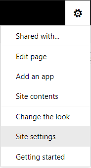

1.Navigate to the root of your Document center https://<designator>.sharepoint.com/documentcenter or similar.
2.Click on the Settings Cog and open Site settings.

3.Select Site columns.

4.Select Create.

5.Enter a column name and then select the type of metadata column you wish to append to your documents. OnePractice supports:
a.Text
b.Multiple Lines of Text
c.Choice
d.Number
e.Date
f.Yes/No column types.
Examples of custom columns could include Tax Year, Priority, Filed at ATO or similar.
6.Select OnePractice Columns as your group for easy location later. If this group doesn’t exist, add it.
7.If you selected Choice, you will need to enter the list of options.
8.You should also configure a default value for this column.

9.Then click Ok at the bottom of the page.